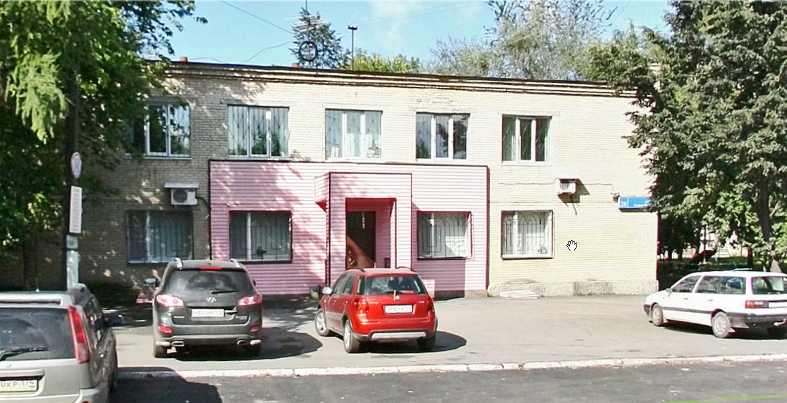
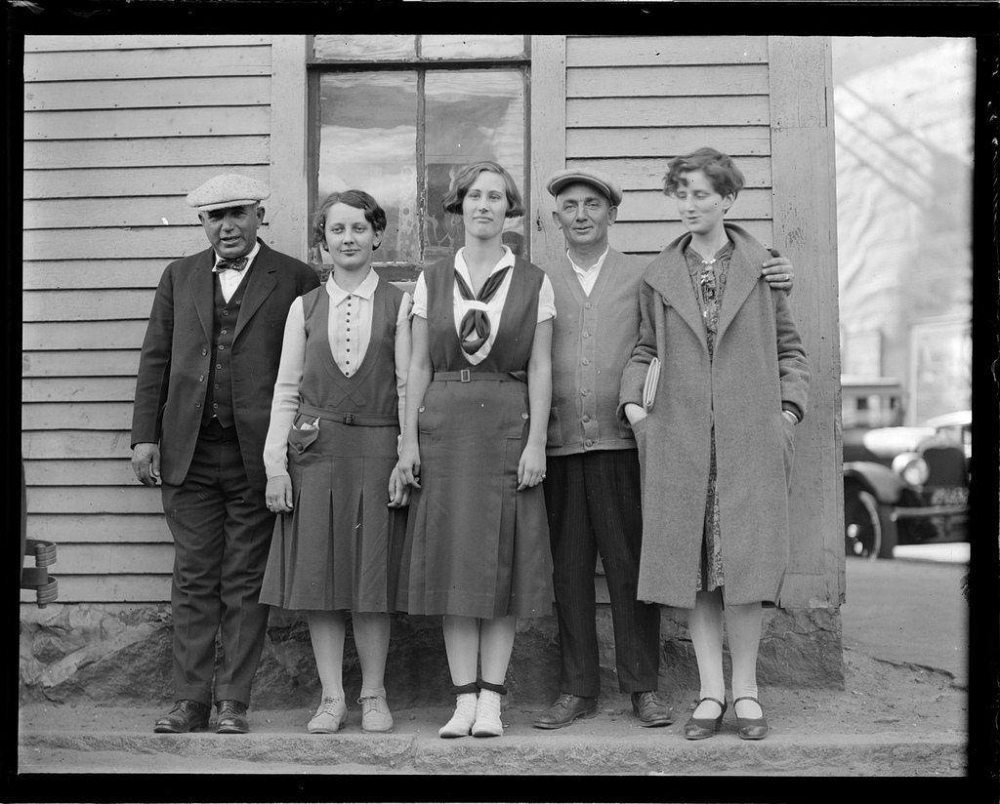

Зачем вам нужен доступный сайт или, как показать сайт незрячему?
1. «Зачем нужен доступный сайт?»
Сайт будет удобен бо́льшему количеству людей
Сайт принесёт больше денег
А теперь поговорим о людях
Какие бывают ограничения?
- Слабовидящие
- Незрячие
- Когнитивные расстройства
- Глухие
- Глухонемые
- Нарушения памяти
|
- Нарушения опорнодвигательного
аппарата
- Нарушения моторики речи
- Повышенная фоточувствительность
- Комбинация перечисленных
нарушений
|
Незрячие
- используют скринридеры (NVDA, JAWS)
- экраны брайля ($2400 за 12 символьный экран)
- (sic!) не пользуются мышью
Челябинское отделение общества слепых

Слабовидящие
- Используют шрифтовые/контрастные настройки
- Экранные лупы
- Обязывает использовать
em/rem
Когнитивные расстройства
- снижение памяти, внимания или способности к обучению;
- жалобы пациента на повышенную утомляемость при выполнении умственной работы;
Это всё:
- Аварии
- Мигрень
- Бессонная ночь
Мигрень и повышенная
фоточувствительность

Когнитивные расстройства
И не только для них, так каждого человека могут отвлечь:
- нужно повторять
- избегать запутывания
Нарушения опорнодвигательного аппарата
- Фрезеровщик
- Сломаная рука
- Аварии
Дальтоники
- 10% мужчин
- Допустим, нет отличия между зелёным и красным
— Хорошо, сколько этих людей?

— Как убедить начальника начать менять сайт?
Привет. Мы готовы и дальше отказываться от девятнадцати процентов платежеспособной аудитории?
Привет. Мы готовы и дальше отказываться от девятнадцати процентов платежеспособной аудитории?
—
Окей, мы готовы. Есть какие-то наработки в этой области?
Стандарты и бренды:
- WCAG
- Section 508
- ГОСТ Р 52872
- Опытное креативное бюро
Скандалы, интриги, расследования
- Валиден, значит доступен
- Доступный сайт должен быть уродливым
- Доступный сайт нужен только слепым
- Забота о доступности - дорогой и сложный процесс
- Текстовой версии достаточно
- Технологии доступности обычно доступны
- Инвалидов в интернете нет
- Доступный сайт неудобен
Делая сайт доступным, вы делаете его удобным для всех
2. «Как делать доступный сайт?»
Обязательно держите в уме
- Семантичность
- Капча не нужна!
- Флеш не нужен!
- Крупные активные области (Закон Фитса)
- Доступность с клавиатуры
- Следите за структурой заголовков
- Порядок контента на сайте
Обязательно держите в уме
- ContentOrder = SourceOrder = TabOrder
- Последовательность контента = Последовательность разметки = Последовательность Табов
- Skip Links на сайтах с длинными страницами
- ARIA
- Контрастность
- Удобочитаемость
Обязательно держите в уме
- Валидация, но не слишком налегайте
- Сопровождение по шагам
- Карта сайта и поиск
- Шрифт без засечек легче воспринимается
- Минимум 16 пикселей для основного контента
- Воздержитесь от курсива и ЗАГЛАВНЫХ
- Ограничивайте длину строки до 80 символов (Для брайля и удобочитаемость)
Маленькие помощники из бойлерплейта
/* Скрыто визуально, доступно для скринридеров */
.visuallyhidden {
border: 0;
clip: rect(0 0 0 0);
height: 1px; width: 1px;
margin: -1px; padding: 0;
overflow: hidden;
position: absolute;
}
/* Показаны пользователю при получении фокуса */
.visuallyhidden.focusable:active,
.visuallyhidden.focusable:focus {
clip: auto;
height: auto; width: auto;
margin: 0;
overflow: visible;
position: static;
}
Проверяйте сами:
- Используйте букмарклеты
- Отключите стили
- Откройте сайт в текстовом браузере, допустим Lynx
- Прочитайте сайт в двух метрах от монитора
- Увеличьте текст в два раза
- Прочитайте сайт не используя мышь
Проверяйте сами:
- Прочитайте сайт используя только одну руку
- Отключите картинки и проверьте `alt`
- Отключите джаваскрипт (к вопросу о ссылках `href="#"` и фоллбеке в виде отдельной страницы)
Основы
- HTML
- Title
- Заголовки
- Ссылки
- Абзацы
- Текст
- Картинки
Основы
- Таблицы
- Списки
- Кнопки
- Формы
- JS && CSS файлы
- WAI-ARIA
HTML
Всегда добавляйте аттрибут lang="ru|en"
Title
Всегда зачитывается скринридером первым на странице
Заголовки
Должна существовать строгая архитектура —
По заголовкам ним можно воссоздать навигацию на странице
Ссылки
- Не убирайте outline! http://outlinenone.com/
- Используйте
:hover вместе с :focus для отклика по табу
- Старайтесь не использовать
tabindex & accesskey
href никогда не должен быть пустым- Не дублируйте
title текстом ссылки
- Дополняйте существующий текст
<a href="#" title="pdf, 21kb">скачать</a>
- Учитывайте дальтонизм
Абзац
- Интерлиньяж не меньше 1.2
- Отступы не
br, а p+p{margin-top: 1em;}
Картинки
alt должен быть всегда!- Если картинка декоративная, то
alt пустой и role="presentation"
- Если описание картинки повторяет,
alt пустой
- Иначе зачитывается имя файла
Таблицы
- Только для табличных данных
table[summary="SMTH"]captionthead>thtbody может быть несколькоtfoot
Списки
- Используйте для меню и для действительных списков
- Допустим, список альбомов на странице
- В скринридерах существует хоткей на следующий элемент
Кнопки
- Должна быть кнопкой
- Должна быть большой кнопкой
- Не ссылкой
- Никогда не должна быть ссылкой
- Если всё же, то добавь
role="button"
Формы
fieldset’ы и легенды (зачитываются)- обязательная линковка лэйблов и инпутов
- можно обернуть инпут в лэйбл, но не будет работать в IE6. Кто-то расстроился?
Формы
aria-labelaria-alertaria-invalidaria-requiredaria-describedby
JS и CSS файлы
Подключайте их отдельными файлами, чтобы читалка не могла ошибиться и не начать читать
Accessible Rich Internet Applications
Мы научились создавать крутые приложения,
но вместе с тем, также научились создавать барьеры
Accessible Rich Internet Applications
- для каждого примера использования особенно в современных веб-приложениях, есть условия для применения АРИА тегов.
- Посмотрите исходники jQuery
ARIA Document Structure
| article |
columnheader |
definition |
| directory |
document |
group |
| heading |
img |
list |
listitem |
math |
note |
presentation |
region |
row |
| rowheader |
separator |
|
ARIA Widget Roles
alert |
alertdialog |
button |
checkbox |
| combobox |
dialog |
gridcell |
link |
| log |
marquee |
menuitem |
menuitemcheckbox |
| menuitemradio |
option |
progressbar |
radio |
| radiogroup |
scrollbar |
slider |
spinbutton |
| status |
tab |
tabpanel |
textbox |
| timer |
tooltip |
treeitem |
|
ARIA Widget Container Roles
| grid |
listbox |
menu |
menubar |
| tablist |
toolbar |
tree |
treegrid |
ARIA Widget Properties
Все свойства начинаются с
aria-…
| activedescendant |
atomic |
autocomplete |
controls |
| describedby |
dropeffect |
flowto |
haspopup |
| label |
labelledby |
level |
live |
| multiline |
multiselectable |
orientation |
owns |
| posinset |
readonly |
relevant |
required |
| setsize |
sort |
valuemax |
valuemin |
«Зачем вам нужен доступный сайт или,
как показать сайт незрячему?»
Владимир Старков, Цифровая собственность.
Не стесняйтесь задавать вопросы в твиттере и на почту: